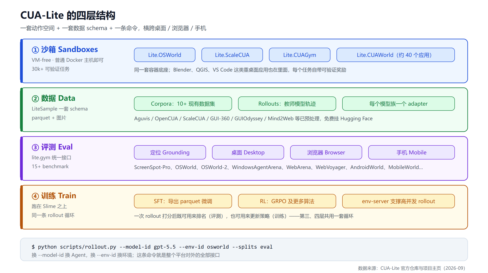
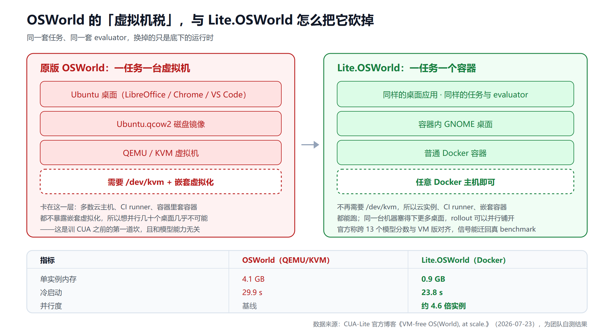
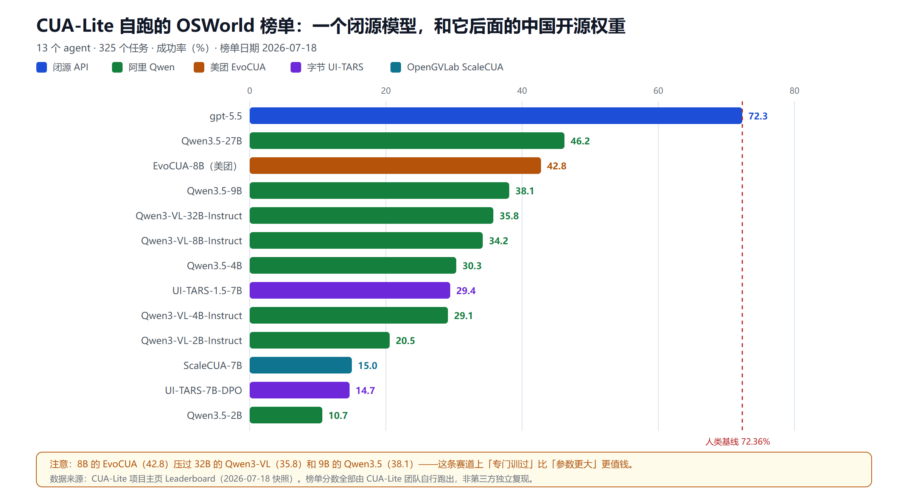
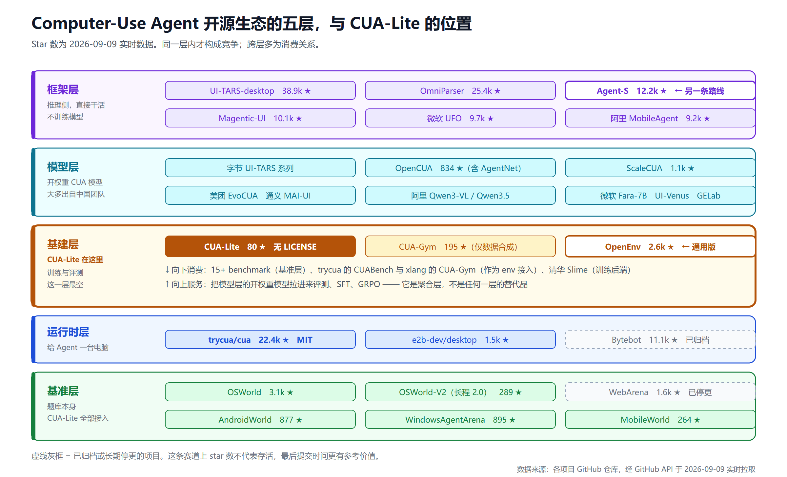

CUA-Lite 拆解：一个平台把电脑操作智能体的沙箱、数据、评测和训练全收了
想训一个会用电脑的 Agent，第一道坎不是模型，是 /dev/kvm。
OSWorld 是这个方向上最常用的桌面基准，它给的是一台真 Ubuntu——LibreOffice、Chrome、VS Code、真实的文件和窗口。代价是每个任务一台完整的 QEMU/KVM 虚拟机，要宿主机暴露嵌套虚拟化。而云主机、CI runner、容器里套容器，这三样恰恰基本都不给。于是很多团队卡在这里：模型选好了、数据攒了一些，就是跑不起足够多的桌面来评测，更别说训练。
UC Berkeley 的一个团队在 2026 年 8 月底放出了 CUA-Lite，思路很直接：把这台虚拟机换成普通 Docker 容器，任务集和 evaluator 一个字不改。官方给的数据是单实例内存从 4.1 GB 降到 0.9 GB、冷启动从 29.9 秒降到 23.8 秒、同机并行约 4.6 倍。
但这只是它的入口。CUA-Lite 真正在做的是一件更大的事：把电脑操作智能体（Computer-Use Agent，下称 CUA）所需的四样东西——沙箱、数据、评测、训练——全部收敛到一套动作空间、一套数据 schema、一条命令之下，横跨桌面、浏览器、手机三个平台。
这篇文章拆四层：它的四层结构各自解决什么；它自己那份榜单里藏着的一个值得中文读者注意的现象；它在整个 CUA 开源生态里到底站在哪、跟谁竞争跟谁互补；以及在你决定投时间之前，必须先看清的三个风险。
一、它不是模型，是模型底下那一层
先把定位说清楚，避免误解。CUA-Lite 不训练也不发布模型。它的论点是基建性的而非模型性的：训练和评测一个 CUA 需要四块拼图——Agent、环境、轨迹数据、以及一套评测和训练的框架——而这四块目前散落在互不兼容的仓库里，每个项目开工前都要把 Agent 循环、虚拟机配置、评测脚本重新造一遍，然后才能跑出第一条 rollout。
CUA-Lite 把这四块放到一个接口后面。

安装是 uv sync --all-extras，Python 3.12。跑一条轨迹的代码长这样：
import asyncio
import lite.gym as gym
import lite.agents as agents
env = gym.make("lite.demo@create_file", max_steps=10)
agent = agents.make("gpt-5.5", env=env)
result = asyncio.run(agent.sample(env))
# result 是一个 LiteRLSample：
# episode_return 任务奖励（1.0 = 成功）
# steps 每一轮的记录
# lite_sample 消息 + 元数据 + 原始截图
命令行版本更能说明它的接口哲学：
uv run python scripts/rollout.py --model-id gpt-5.5 \
--env-id lite.osworld --task-id osworld_libreoffice_impress_05dd4c1d --save-gif \
--config-path scripts/configs/gpt/default/lite.osworld.yaml
换 --model-id 就换 Agent，换 --env-id 就换环境。这两个开关就是整个平台对外的全部接口——从桌面到手机、从评测到训练，都是这条命令的变体。
二、第一层：把虚拟机税砍掉
四层里最硬的贡献在最底下。
VM 税到底卡在哪
OSWorld 的桌面很真实，但它的真实是靠一台完整虚拟机换来的。这件事的麻烦不在于资源贵，而在于它对宿主机有硬性要求：/dev/kvm、嵌套虚拟化。托管基础设施大多不暴露这些能力，所以你没法在 CI 里跑，没法在便宜的云实例上铺量，也没法在已经是容器的环境里再套一层。结果是这套基准很难 scale——而 CUA 的训练和评测偏偏都是「需要非常多台桌面」的活儿。
Lite.OSWorld 的做法是保留桌面、丢掉虚拟机：同样的任务、同样的 evaluator，跑在一个普通 Docker 容器里的 GNOME 桌面上。

| 指标 | OSWorld（QEMU/KVM） | Lite.OSWorld（Docker） |
|---|---|---|
| 运行时 | QEMU / KVM 虚拟机 | Docker 容器 |
| 宿主要求 | /dev/kvm + 嵌套虚拟化 |
任意 Docker 主机 |
| 单实例内存 | 4.1 GB | 0.9 GB |
| 冷启动 | 29.9 s | 23.8 s |
| 并行度 | 基线 | 约 4.6 倍实例 |
| 任务集 | OSWorld | 完全相同 |
保真度这一关怎么过
把虚拟机换成容器，最该被质疑的就是保真度——容器里跑出来的分数，还能不能代表真 benchmark 上的分数？团队对这一点给了正面回答：跨 13 个模型，Lite.OSWorld 的分数与 OSWorld 虚拟机版对齐。同一个模型、同一个任务、同一套 evaluator 判分，所以在容器里挣到的分数或训练信号可以直接迁回原基准。
这一条是整层的关键。如果分数不对齐，那这就只是个「便宜但没用」的替代品；对齐了，它才成为一个能放心用的底座。需要说明的是，这个对齐结论目前来自团队自己的实验，还没有第三方独立复现。
同一个底座长出一个沙箱家族
容器化不只服务 OSWorld。同一套底座上已经长出：
- Lite.OSWorld — 复现 OSWorld 任务集，369 个基准任务 + 2000 多个合成任务，覆盖 10 个桌面应用
- Lite.ScaleCUA — 桌面轨迹环境，也是官方 SFT 示例用的数据来源
- Lite.CUAGym — 面向 RL 优化的训练任务
- Lite.CUAWorld — 按应用展开约 40 个（Blender、QGIS、VS Code 等），还包括真实科学桌面，比如用 GMAT 飞航天器、用 PyMOL 转蛋白质结构
加上浏览器侧的 WebGym、手机侧的 MobileGym，全平台号称 30k+ 可验证任务。「可验证」是重点：每个任务自带程序化奖励，所以既能用来评测排名，也能直接当 RL 的奖励信号。这一点和我们之前聊过的 AI Agent 代码沙箱 是同一类问题的不同侧面——那边解决的是让 Agent 安全跑代码，这边解决的是让 Agent 有足够多的真桌面可以练。
三、第二层：LiteSample，一次转换全体受益
沙箱解决「有地方跑」，数据解决「有东西学」。
CUA 数据的现状是各写各的 schema：为一个 Agent 采的数据换个模型就用不了。CUA-Lite 的答案是 LiteSample——一套跨所有环境、Agent、任务类型共用的监督学习格式，落地形态朴素得很：普通 parquet + 图片。每个样本就是「截图 + 该做的动作」，可以是单步，也可以是整条轨迹。
数据从两个源头灌进来：
- Corpora — 10 多个已有 CUA 数据集预处理成统一格式，包括 Aguvis、OpenCUA、ScaleCUA、GUI-360、GUIAct、GUIOdyssey、CAGUI、Multimodal-Mind2Web、UI-Genie-Agent
- Rollouts — 用前沿模型当教师在沙箱里跑出的新轨迹（官方用的是 GPT-5.5），格式和上面完全一致，可以直接蒸馏进小模型
两类数据全部免费挂在 Hugging Face 上。
统一 schema 有个绕不开的问题：不同模型族期望的训练格式（scaffolding）本来就不一样。CUA-Lite 的处理方式是每个模型族配一个 adapter，把统一的 LiteSample 打包成该模型自己需要的格式，其中包括历史折叠——让若干步共享一次前向传播，省显存也省算力。
这个「一次转换、全体受益」的设计，价值在时间维度上：把一份数据转成 LiteSample，不只是现在的模型能训，将来还没出现的模型也能训。
四、第三、四层：评测与训练共用一条循环
第三层和第四层其实是一件事的两面。
Agent 和环境在 lite.gym 里相遇：截图往上走，动作往下走，每个平台一套统一动作空间，外加各环境自己的额外工具。内置 10+ Agent（GPT、Claude、Gemini、Qwen3-VL、Qwen3.5、UI-TARS、微软 Fara-7B、美团 EvoCUA、通义 MAI-UI、阶跃 GELab 等），接入 15+ benchmark：
- 定位（Grounding） — ScreenSpot-Pro、OSWorld-G
- 桌面 — OSWorld、OSWorld-2、Lite.OSWorld、WindowsAgentArena、CUABench
- 浏览器 — WebArena、VisualWebArena、MiniWoB、WebVoyager、Online-Mind2Web、WebGym
- 手机 — AndroidWorld、AndroidLab、MobileWorld、MobileGym
关键在于同一条 rollout 循环两用：一次 rollout 打完分，可以拿去给 Agent 排名（评测），也可以拿去更新策略（训练）。这就是为什么第三、四层没必要拆成两套东西。
训练侧给了两条路。SFT 是导出模型专属的 parquet 然后微调，官方示例是把 Qwen3-VL-2B-Instruct 在 Lite.ScaleCUA 桌面轨迹上微调，lite.osworld 332 任务评测集上 mean episode return 从 0.138 抬到 0.237。RL 是把环境里打分的 rollout 喂给 GRPO，跑在清华的 Slime 上，官方示例覆盖 MobileGym 的 416 个手机任务、28 个应用，高并发时通过 env-server 统一供给环境。
那个 0.138 → 0.237 的提升要看清前提：单一配置、两张 GPU、团队自报，没有独立复现。它能说明「这条链路是通的」，不能当成「你也一定能涨这么多」。想系统了解微调这一侧的工具选择，可以对照 大模型微调框架横评。
五、榜单里的现象：一个闭源模型，和它后面的中国开源权重
CUA-Lite 挂了一份自己跑的 OSWorld 榜单：13 个 agent、325 个任务、快照日期 2026-07-18。这份榜单本身比它的技术细节更值得中文读者看一眼。

gpt-5.5 以 72.3% 排第一，几乎正好压在 72.36% 的人类基线上。而它往下的十二名——除了排位靠后的几个——几乎清一色是中国团队的开源权重：阿里 Qwen3.5-27B 46.2%、美团 EvoCUA-8B 42.8%、Qwen3.5-9B 38.1%、Qwen3-VL-32B 35.8%、Qwen3-VL-8B 34.2%、字节 UI-TARS-1.5-7B 29.4%、OpenGVLab ScaleCUA-7B 15.0%。
两个观察。
第一，参数量在这条赛道上不是决定性的。 美团 EvoCUA-8B 拿 42.8%，压过 32B 的 Qwen3-VL（35.8%）和 9B 的 Qwen3.5（38.1%）。EvoCUA 的路子是把数据生成和策略优化捏成一个自我演化的循环，而不是被动模仿静态数据集。也就是说，「专门为电脑操作训过」比「底座更大」更值钱——这和 专用小模型与通用大模型的共存关系 里的判断是一致的。
第二，一个 Berkeley 做的平台，事实上成了中国开源 CUA 模型的公共考场。 这不是巧合：CUA 这个方向上开放权重的模型，绝大多数出自中国团队——阿里的 Qwen 系列和通义 MAI-UI、字节的 UI-TARS、美团的 EvoCUA、阶跃的 GELab、上海 AI Lab 的 ScaleCUA。海外这边，OpenAI 和 Anthropic 的 computer use 只有 API，微软的 Fara-7B 是少数开权重的例外。所以谁来做那个「中立评测场」这件事，就落到了学术机构头上。
顺带说一句尺度：这份榜单用的是 OSWorld 1.0。同期的 OSWorld 2.0 把任务拉到长程——单任务人类中位耗时约 1.6 小时、平均要 300 多次工具调用，而 1.0 大约是 30 次。在 2.0 上，前沿模型的二元完成率还挤在 30% 上下。所以别把 72.3% 读成「电脑操作已经解决了」，只能说在 1.0 这个尺度上，头部模型追上了人类基线。
六、它在生态里的位置：跟谁竞争，跟谁互补
这里要先破一个常见误解。看到 CUA-Lite 只有 80 stars，很容易拿它去比 22.4k stars 的 trycua/cua，然后得出「这项目没戏」的结论。但这两个根本不在同一层，甚至是上下游关系。
把 CUA 开源生态摊开，大致是五层。

基准层是题库：OSWorld、OSWorld-V2、AndroidWorld、WindowsAgentArena、MobileWorld、WebArena。CUA-Lite 把 15 个以上全接了进来，是纯消费方。
运行时层负责给 Agent 一台电脑。头部是 trycua/cua（22.4k stars，MIT，几乎每天都在提交），现在是四件产品：Cua Fleets 提供云端隔离桌面池，Cua Driver 在 macOS/Windows/Linux 上驱动原生应用且支持后台输入不抢焦点，Lume 在 Apple Silicon 上跑 macOS 虚拟机，Cua Bench 做任务编写、评测和轨迹导出。旁边还有 e2b-dev/desktop（1.5k stars）。
这一层和 CUA-Lite 不是竞争关系，而是被它消费——CUA-Lite 的环境列表里有 cua.bench.local.{basic,kicad,workflows} 这几项，也就是它把 Cua Bench 当作一个 env 接了进来。同理，xlang-ai/CUA-Gym 接成了 lite.cuagym，清华的 Slime 是它的训练后端。CUA-Lite 本质是个聚合层。
模型层是开权重的 CUA 模型，前面榜单那节已经说过，绝大多数出自中国团队。CUA-Lite 是把它们拉进来评测和微调的那个工具。
框架层在推理侧直接干活，是这条赛道上最热闹的一层：字节的 UI-TARS-desktop（38.9k stars）、微软的 OmniParser（25.4k）和 UFO（9.7k）、Magentic-UI（10.1k）、阿里的 MobileAgent（9.2k）。
这一层里有一个值得单独说的，因为它代表了和 CUA-Lite 相反的技术路线：simular-ai/Agent-S（12.2k stars，Apache-2.0）。Agent S3 是第一个在 OSWorld 上超过人类基线的系统——72.60%，2025 年 12 月，论文进了 TMLR 2026。它压根不训模型，做法是通用规划器（GPT-5）+ 专用 grounding 模型（官方推荐配字节的 UI-TARS-1.5-7B）+ Behavior Best-of-N 采样放大：单跑 Agent S3 在 100 步设置下 66%，加上 bBoN 才推到 72.6%。
于是两条路摆在一起就很有意思了：Agent-S 把算力花在推理时堆采样，CUA-Lite 把算力花在训练时堆数据。 前者已经越过人类基线，后者官方示例是把 Qwen3-VL-2B 从 0.138 抬到 0.237。如果你的目标是「现在就要一个能用的桌面 Agent」，Agent-S 那条路更近；如果你的目标是「拥有一个自己的、可私有部署的小模型」，才轮到 CUA-Lite。
基建层才是 CUA-Lite 真正的同层，而这一层出奇地空——只有四个玩家：CUA-Lite 自己、只做数据合成一层的 CUA-Gym（195 stars）、没有训练管线的 Cua Bench，以及下面这个。
真正需要盯的竞争者是 OpenEnv，不是 trycua
OpenEnv 是 Meta-PyTorch 和 Hugging Face 联合发起的通用 agentic RL 环境标准：Gymnasium 风格的 step() / reset() / state()，环境打包成 Docker、通过 WebSocket 通信、直接托管在 Hugging Face Spaces 上分发。2.6k stars，BSD-3-Clause。
它的分量在阵容上。技术委员会包含 Meta-PyTorch、Hugging Face、Microsoft、Nvidia、Prime Intellect、Unsloth、Modal、Reflection、Mercor、Fleet AI、RadixArk；训练侧已经接了 TRL、torchforge、Unsloth、SkyRL、ART、Oumi。相邻生态里还有 PrimeIntellect 的 verifiers（4.6k stars）。
威胁在哪：CUA-Lite 的核心叙事是「一套接口统一所有环境」，而 OpenEnv 在做同一件事的通用版，且有整个行业背书和 HF Hub 的现成分发渠道。
为什么现在还不构成威胁：OpenEnv 目前的官方示例环境是 Echo、Coding、Chess、Atari、FinRL——一个 CUA 桌面环境都没有，README 里还挂着 experimental 阶段的警告。这个空位技术上完全可以被填，一旦有人把 OSWorld 包成 OpenEnv 环境，CUA-Lite 的「统一接口」卖点就被稀释。
所以 CUA-Lite 真正的护城河比它自己宣传的窄，实际只剩两条：容器与虚拟机的保真度对齐，以及 LiteSample 加 per-model adapter 那套数据格式。跨环境的统一命令行，是随时可能被复刻的部分。
顺带一个选型提醒：star 数在这条赛道上不可靠
调研时我按最后提交时间过了一遍，死亡率不低：Bytebot 11.1k stars，仓库已经归档，最后提交停在 2025 年 9 月；self-operating-computer 10.3k stars，停更一年；WebArena 1.6k stars，2025 年 11 月后没动过；字节的 UI-TARS 模型仓库停在 2026 年 1 月。
在这个方向上做选型，最后提交时间比 star 数有用得多。
七、三个必须先看清的风险
前面都是它做对的事。下面这三条，在你决定投时间之前必须先看。
风险一：至今没有 LICENSE 文件。 我查了仓库根目录，只有 AGENTS.md、CLAUDE.md、README.md、docs、lite、scripts、slime、tests 这些，没有任何许可证文件，GitHub API 返回的 license 字段也是空的。这意味着默认情况下你并没有获得使用、修改、分发的授权。个人研究试用问题不大，但商用前必须先联系作者把授权说清楚。这是三条里最硬的一条。
风险二：项目极早期。 仓库 2026 年 8 月 23 日创建，到 9 月上旬约 80 stars、6 forks、2 个 open issue，contributor 列表只显示一个主要提交者。它有 Lambda 提供的部分算力支持、有清晰的路线，但客观说这是个刚出生两周的项目，烂尾风险真实存在。同时它也没有 arXiv 论文——引用格式就是个指向 GitHub 的 misc 条目。基建先行、学术背书还没到。
风险三：所有分数都是自跑的。 团队自己在博客里写得很坦白：榜单上每一个分数都是他们自己跑出来的。这不是造假，是透明——但它确实意味着这份榜单不是第三方裁判。「容器与虚拟机分数对齐」、「SFT 提升 0.138 → 0.237」这两个最关键的结论，同样都还等着外部复现。
八、什么情况下该动手
按角色给个判断。
如果你在训 GUI Agent，这是当前性价比最高的起点。 尤其是被 /dev/kvm 卡住过的团队——能在普通云实例和 CI 上铺开几十个桌面，这件事本身就解锁了之前做不了的实验规模。SFT 和 GRPO 的完整链路已经跑通并有示例，不用自己从零搭。
但如果你要的只是「现在就能用的桌面 Agent」，先别从这里开始。 走 Agent-S 那条路更近：通用模型 + 专用 grounding + 采样放大，不用训任何东西，而且已经越过人类基线。只有当你确实需要一个自己拥有、能私有部署的小模型时，训练这条路才划算。
如果你要做 CUA 选型评测，可以拿它当统一起跑线。 一条命令换模型换 benchmark，比自己给每个模型手搓 harness 靠谱得多。但结论要自己跑一遍，别直接引用官方榜单。评测方法论上的坑可以参考 大模型评测指南，harness 本身的工程含量见 Harness 工程：AI Agent 隐形的另一半。
如果你手上有 CUA 数据集或沙箱，转成 LiteSample 的边际收益是递增的。 团队在公开征集数据和环境贡献者，逻辑很清楚：转一次格式，之后所有 Agent 都能在你的数据上训、在你的环境里测。
如果你要做的是企业内的 RPA 替代或桌面自动化交付，现在还别把它放进技术栈。 它是研究和训练基础设施，不是生产运行时。生产侧要的是稳定性、审计、权限边界这些东西，可以先看 企业 AI Agent 部署指南 和 Agent 治理与可观测性的隐性成本。执行侧的工具选择，浏览器方向见 浏览器 GUI Agent 横评，企业通用 Agent 方向见 IBM CUGA 深度拆解。
小结
CUA-Lite 值得关注的地方，不在于它砍掉了 3.2 GB 内存——虽然那个数字很好看——而在于它指出了一件常被忽略的事：Computer-Use Agent 这个方向缺的从来不是模型，是模型底下那层基建。
过去两年 CUA 的叙事全在模型上：谁的成功率更高、谁又刷了榜。但每个想入场的团队，都要先重新造一遍虚拟机配置、Agent 循环、评测脚本、数据格式转换，然后才能开始真正的工作。CUA-Lite 做的事就是把这层重复劳动收敛掉，让沙箱、数据、评测、训练在一套接口下互相复用。
也正因为它是个聚合层，判断它的时候别拿 star 数去比 trycua——那是它的上游而非对手。它真正的同层只有三个玩家，其中最需要盯的是 OpenEnv：同样在做「统一环境接口」，通用版，背后是 Meta-PyTorch、Hugging Face、微软、Nvidia 这一串名字。CUA-Lite 剩下的护城河，实际就是容器与虚拟机的保真度对齐，加上 LiteSample 那套数据格式。
它现在还只是个两周大、80 stars、没有许可证的早期项目，随时可能停更。但在「CUA 专用的训练评测基建」这个格子里，目前确实还没有等价替代品。如果你在这条赛道上，值得现在就把它跑起来看一眼——但商用之前，先把 LICENSE 的事问清楚。
免责声明
本文基于 2026 年 9 月上旬的公开资料整理，包括 CUA-Lite 官方仓库、项目主页、官方博客及第三方报道。项目处于早期阶段，功能、数据、榜单、许可证状态均可能快速变化，请以官方仓库最新状态为准。文中所有性能数据（内存、冷启动、并行度、榜单分数、SFT 提升幅度）均为 CUA-Lite 团队自行测量与自行跑出的结果，截至发文尚无第三方独立复现，不构成对实际效果的保证。该仓库截至本文发布时未包含任何许可证文件，商用前请自行核实授权条款。 技术选型请结合自身算力条件、合规要求与团队工程能力综合判断。
参考来源
- CUA-Lite GitHub 仓库
- CUA-Lite 项目主页与 Leaderboard
- CUA-Lite 官方博客：VM-free OS(World), at scale.
- CUA-Lite 官方博客：Why CUA-Lite — and a call for contributors.
- CUA-Lite 在 Hugging Face 上的数据集
- MarkTechPost：UC Berkeley Researchers Release CUA-Lite
- OSWorld 项目仓库
- OSWorld 项目主页
- Slime（GRPO 训练框架）
- trycua/cua（Cua Fleets / Driver / Lume / Bench）
- simular-ai/Agent-S（Agent S3）
- Agent S3 论文《Scaling Agents for Computer Use》
- OpenEnv（Meta-PyTorch × Hugging Face 环境标准）
- Hugging Face 博客：开源社区共建 OpenEnv
- xlang-ai/CUA-Gym
- xlang-ai/OpenCUA（NeurIPS 2025 Spotlight）
- bytebot-ai/bytebot（已归档）
- EvoCUA 论文
- ScaleCUA 论文
- MAI-UI 论文
- Snorkel：OSWorld 2.0 长程基准榜单
- OSWorld 2.0 长程任务基准论文
延伸阅读
- 浏览器 GUI Agent 横评：Page Agent / browser-use / Stagehand / Skyvern
- IBM CUGA：企业级通用 Agent 深度拆解
- AI Agent 代码沙箱怎么选
- 大模型微调框架横评
- 大模型评测指南：MMLU、SWE-bench 与竞技场
- Harness 工程：AI Agent 隐形的另一半
- 专用小模型与通用大模型的共存
- 企业 AI Agent 部署指南
- Agent 治理与可观测性的隐性成本
推荐搭配装备
善其事，利其器。以下硬件能最大化你的AI体验👇
🔗 通过以上链接购买可支持本站持续运营 🙏